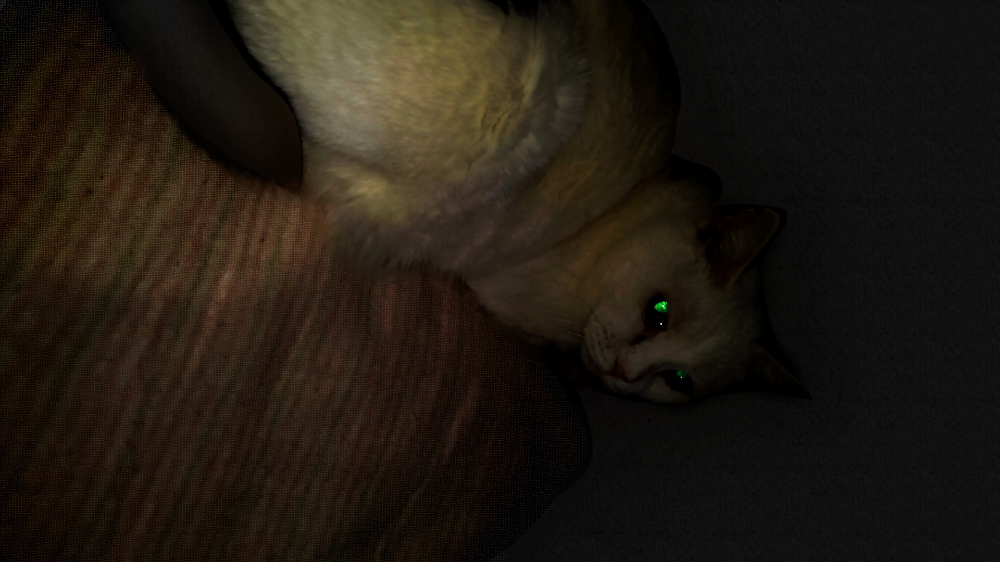

NyaLiZA

NyaLIZA(ニャライザ) はあなたのすべてを受け入れます。
概要
古への「人工無能ELIZA」にインスパイア（劣化版ともいう）されたプログラムです。
主な機能
ユーザーの入力に対する応答
使い方
1. NyaLIZA.zip をダウンロードします。
2. ダウンロードしたzipファイルを解凍します。
3. 解凍されたフォルダの中にある `NyaLIZA.exe` を実行します。
必要な環境
Windows 10
その他
コードを実際に書いたのは Gemini Code Assist です。
開発者はC#のことは全く知りません(*´ω｀)。
猫の画像は、開発者の実家の猫をスマホで撮影したものです。
写真嫌いな猫なのでこっそり近づいて撮影しようとしたら、睨まれた---ときの写真.